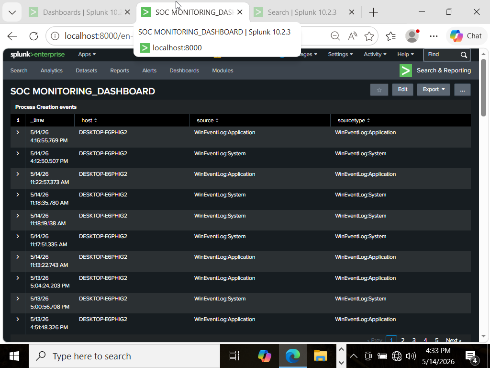

PROJECT_01 / PERSONAL_HOME_LAB
SIEM HOME LAB
Built a SOC-style home lab simulating threat detection workflows using Splunk and Sysmon on a local virtual network.
WHAT I BUILT / INVESTIGATED
- • Configured Active Directory with domain users and monitored authentication events via Windows Event Logs.
- • Created Splunk dashboards and alerts for failed logins, process creation, and reconnaissance activity.
- • Simulated basic attacker behavior with Kali Linux and Nmap.
- • Mapped findings to the MITRE ATT&CK framework.
TECHNOLOGIES
Splunk · Sysmon · Active Directory · Kali Linux · VirtualBox
Open case study notes
OBJECTIVE
Simulate threat detection workflows in a SOC-style home lab.
ENVIRONMENT
Local virtual network using Windows Server, Active Directory, Kali Linux, and VirtualBox.
LOG SOURCES
Windows Event Logs and Sysmon.
DETECTION
Failed logins, process creation, and reconnaissance activity in Splunk.
INVESTIGATION
Investigated process creation, failed and successful logons, security events, and Nmap reconnaissance activity in Splunk.
MITRE ATT&CK
T1046 (Network Service Scanning), T1078 (Valid Accounts), and T1110 (Brute Force).
LESSONS LEARNED
Built practical experience collecting, investigating, and visualizing Windows security telemetry.
LAB FLOW
